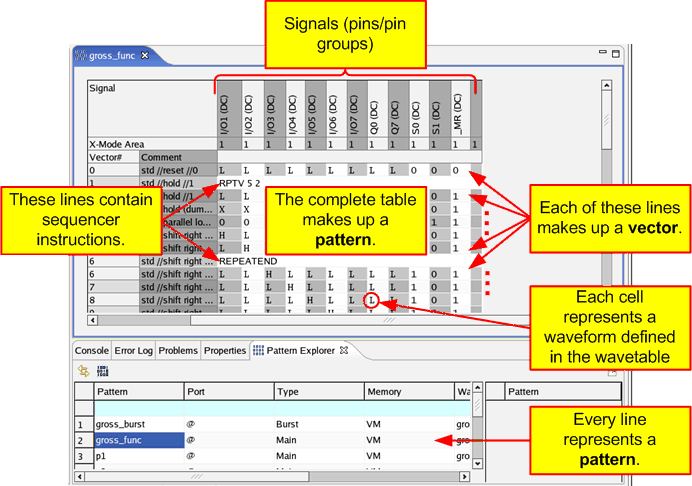

Definitions: Vector, Pattern, Burst, etc. ...
This topic gives an overview of the most used terms in conjunction with the pattern tools. The figure below shows the pattern tools 'Pattern Explorer' and 'Pattern Editor'. In the Pattern Editor the device cycle (DC/DVC) names are displayed.
Vector
A vector is a set of driver actions and compare actions at one tester cycle. In the figure above each cell of a vector contains a device cycle name, which points to a waveform defined in the wavetable.
In the Pattern Editor a vector is one single line. Lines containing sequencer instructions are not vectors.
X-vector
A vector that express a number of states at one point in time on the device. The x-vector is always related to an x-mode area. For more information see DUT oriented view - xN and x1/N mode.
Pattern
A pattern is a sequence of vectors and sequencer instructions.
In the Pattern Editor a pattern is the complete table. In the Pattern Explorer a pattern is represented by one single line.
Label
A label is the name of a pattern. A pattern file normally contains a number of patterns.
In the context of the Pattern Debug Tool the terms label and vector label are often used as a synonym for pattern. To avoid confusion, the term label is not used in the Pattern Debug Tool documentation.
Port
Ports organize the device into pin groups that can be tested independently with different timings and by separate sequencer programs. The default port (@), which is supplied by the system, consists of all pins.
Burst
A burst is a sequence of main patterns that are executed in series. A burst uses always the default port (@) (see also the definitions of Port Burst and Multiport Burst). The sequencer needs to be started only once to execute all main patterns contained in the burst. This improves the test execution performance.
Port Burst
A port burst is a burst (sequence of main patterns) for a specified group of pins (the port). A port burst is always part of a multiport burst.
Multiport Burst
A multiport burst is the combination of one or more port bursts that are to be executed in parallel in a multiport test.
Sequencer instruction
The sequencer has its own set of instructions which you use to control the execution of your test.
A pattern can contain sequencer instructions to control.
